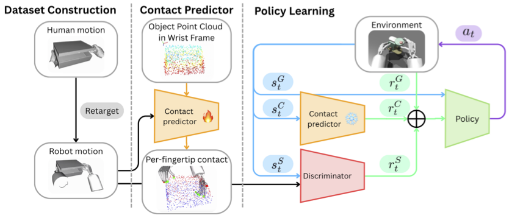
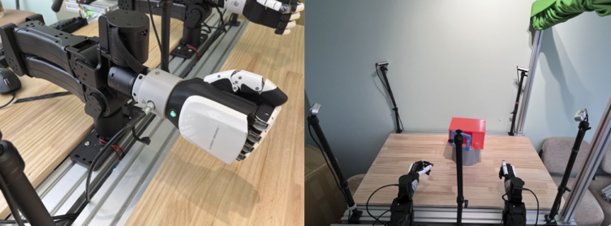

Learning Human-Like Dexterous Hand Manipulation via Adversarial Motion Priors and Contact Guidance
Human-like motion makes robots more natural and acceptable to people. In dexterous hand manipulation, high-dimensional control and complex contact make unnatural movements especially noticeable. Reinforcement learning has achieved strong task performance in dexterous hand manipulation, but policies trained only with task rewards often succeed without moving like a human. We aim to learn manipulation that not only completes the task but also moves like a human, using task-agnostic human motion data with no task-specific demonstrations or hand references. To do so, we adapt adversarial motion priors to encourage human-like hand motion, and add a learned contact predictor that models human-like hand-object contact. Experiments show that our method is more human-like in both motion and contact.
Method

In our proposed framework, there are three steps:
- Dataset construction. We retarget human hand-object motion data to the robot hand. The data can be reused for new tasks without collecting new demonstrations.
- Contact predictor. A motion style alone can leave fingers hovering above the object or touching it with the wrong part of the hand. So, from the retargeted data, we train a model that predicts which fingertips should touch an object. Its input is the object's point cloud in the wrist frame, so it sees the object's shape and where the object is relative to the wrist. In the next step, the prediction guides the policy toward human-like contact.
- Policy learning. We train the policy with reinforcement learning using three rewards: task success, human-like motion style from an adversarial motion prior, and human-like contact guided by the contact predictor. Since humans use their hands in a consistent style across tasks, we expect the learned style to transfer to new tasks without task-specific supervision.
Hardware setup

Our real-world setup is a bimanual robot with two YAM Ultra arms, each mounted with an Inspire hand, and four cameras that estimate the object pose.
Real-world results
We train policies in simulation and deploy them on a bimanual robot with dexterous hands, using teacher-student distillation and object pose estimated from four cameras. Ours is trained in the unseen setting, without demonstrations of the manipulated object.
Simulation results
We compare RL, AMP, AMP + contact, and ours in simulation. AMP + contact adds the contact state to the discriminator input. AMP, AMP + contact, and ours are trained in the unseen setting, without demonstrations of the manipulated object.
Human study
To know whether people see our method's motion as more human-like, and whether they prefer it over the baselines, we asked twenty participants to compare pairs of motion videos from the unseen setting and answer four questions about finger motion, contact, overall human-likeness, and preference. The values in the table are win rates: each method's total number of wins divided by its total number of comparisons, pooled over all opponents. We can see that our method wins the most comparisons on all four questions. It is significantly better than RL on all four, and significantly better than AMP + contact on finger motion, contact, and overall human-likeness (p < 0.05).
Task completion and contact
To know whether making the hand more human-like costs task performance, and whether its fingertip contact is closer to human contact data, we measure two things. Completion rate (CR) is the fraction of the target object trajectory completed before the pose error exceeds a threshold. Contact IoU (CI) measures how closely fingertip contact matches human contact data. Higher is better for both. In the seen setting, the demonstrations include the manipulated object; in the unseen setting, they do not. We can see that our method keeps task completion similar to the baselines and reaches the highest contact IoU.